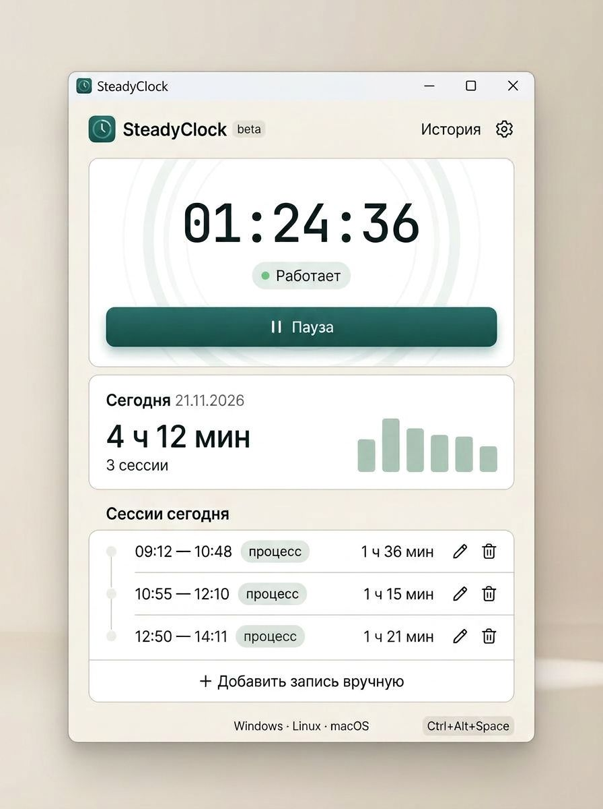
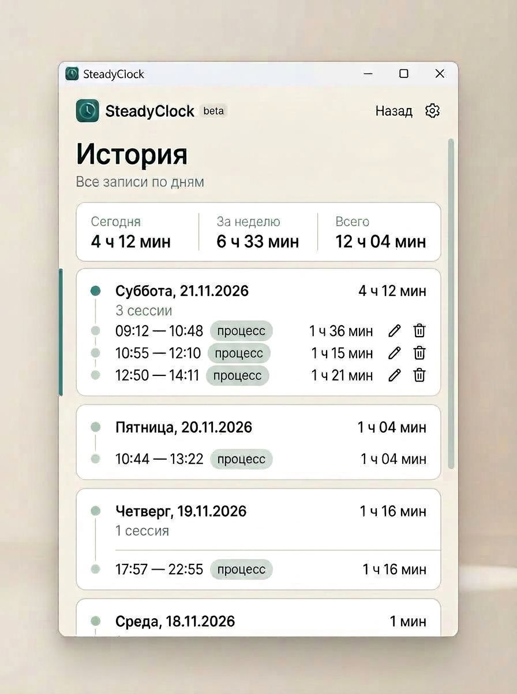
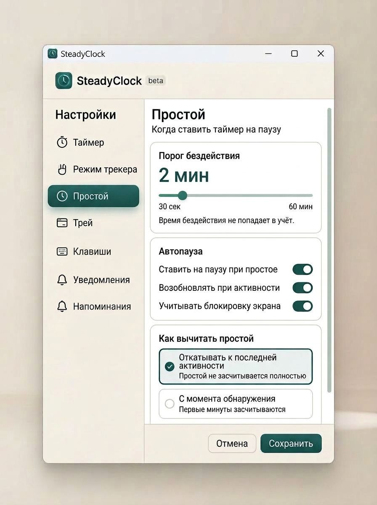
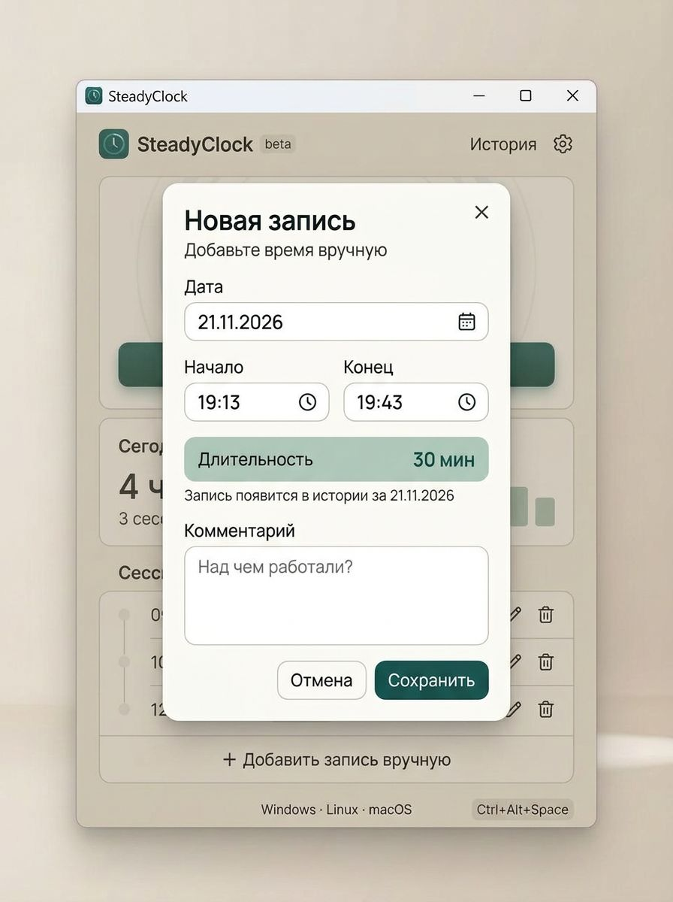
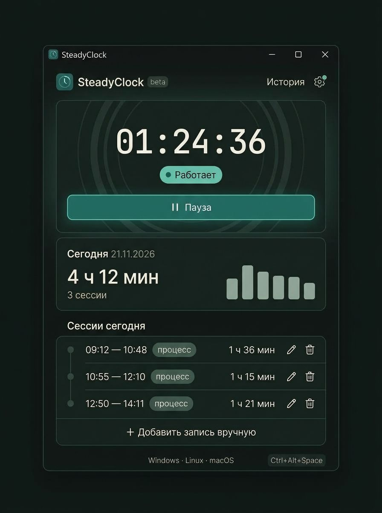
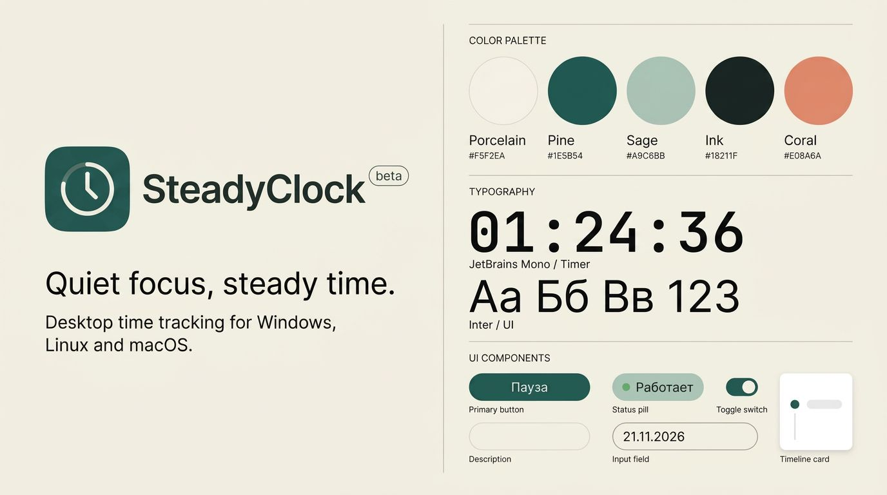

Главный экран
Таймер, статус, итог дня и таймлайн сессий
SteadyClockbeta
Тихая сосредоточенность.
Концепция интерфейса для трекера времени: тёплый фарфор, глубокий хвойный зелёный, крупный таймер и ничего лишнего. Дизайн помогает удерживать ритм, а не отвлекает от работы.
Windows · Avalonia
Inter + JetBrains Mono
Light / Dark

Экраны
Одна визуальная система для таймера, истории, настроек и ручных записей. Композиция сохраняет фокус на текущем действии.

История
Сводка и записи по дням

Настройки
Боковая навигация вместо длинной простыни

Новая запись
Ручное добавление времени
Палитра
Тёплая база, один глубокий акцент и мягкий шалфей. Коралл — только для редких важных отметок.
Типографика
Inter держит интерфейс, JetBrains Mono — цифры таймера. Обе гарнитуры поддерживают кириллицу.
JetBrains Mono / Timer
01:24:36
Табличные цифры, плотный трекинг, 64–72 px в главном окне.
Inter / UI
Aa Бб Вв 123
400 / 500 / 600. Спокойные заголовки, читаемый вторичный текст.
Тёмная тема
Не неон и не «киберпанк»: глубокий графитово-зелёный, тёплый светлый текст и мятные акценты.

Главный экран, dark
Та же структура, другое настроение
Дизайн-система
Логотип, палитра, шрифтовая пара и базовые компоненты — всё, из чего собираются экраны.

SteadyClock — Quiet Focus
Palette · Typography · Components
Радиусы
24 px карточки · 14 px поля · pill
Сетка
4 px база · 16/20/24/32 px отступы
Движение
150–200 ms ease-out